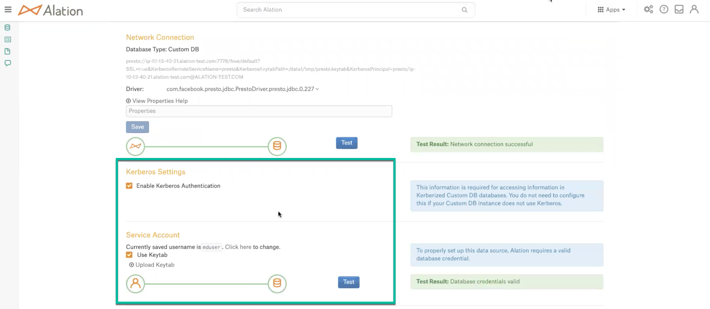

EMR Presto on Hive with AWS Glue as Metastore¶
Applies from version 2020.4
From 2020.4, EMR Presto on Hive with AWS Glue is supported as Custom DB. Alation has certified the following driver for EMR Presto data sources:
com.facebook.presto.jdbc.PrestoDriver.presto.jdbc.0.227
The driver is present in the list of drivers in Alation by default and can be selected when adding the data source to Alation.
Alation has certified EMR 6.0.0 and Presto 0.230 versions for this setup.
Scope of Support¶
AWS Glue as metastore
Kerberos with Keytab authentication
Full, incremental, and selective Metadata Extraction (MDE) for tables and views
Table and Column Sampling and Profiling
Automatic Profiling
Query-based Profiling
Query Log Ingestion, Lineage, and Source Comments
Compose
Presto Grammar: Contact Alation Support for setting up Presto grammar for your Presto data source
AWS Billing¶
About billing-related questions, consult with your AWS account admin. The following queries may be billable by Amazon on your AWS account depending on your AWS account contract:
The queries Alation runs on the connected EMR Presto instance during MDE, Profiling, and QLI;
The queries users run in Alation Compose.
Ports¶
Port 7778 must be open on the EMR host.
Required Information¶
Driver to be selected to connect to the database: com.facebook.presto.jdbc.PrestoDriver.presto.jdbc.0.227
JDBC URI
Service Account with the required privileges
Kerberos information
The keytab file
presto.jks file
Authentication¶
Kerberized data sources can only be added to the catalog after Kerberos configuration has been done on the Alation server side. Refer to Configuring Kerberos for Data Source Authentication.
JDBC URI¶
The JDBC URI must be entered without the “JDBC” tag at the beginning:
presto://<EMR_hostname>:7778/hive/default?SSL=true&KerberosRemoteServiceName=presto&KerberosKeytabPath=<path to keytab>&KerberosPrincipal=<Kerberos Principal>
Example:
presto://ip-10-13-58-104.alation-test.com:7778/hive/default?SSL=true&KerberosRemoteServiceName=presto&KerberosKeytabPath=/data1/tmp/presto.keytab&KerberosPrincipal=presto/ip-10-13-58-104.alation-test.com@ALATION-TEST.COM
The following parameters should be included:
SSL=trueKerberosRemoteServiceName=prestoKerberosKeytabPath=<path to the keytab file on the Alation host>KerberosPrincipal=<Kerberos Principal name>
Preliminaries¶
Kerberos for Datasource Authentication¶
Kerberos authentication requires pre-configuration. Make sure the required configuration for Kerberos authentication has been performed on your Alation instance: Configuring Kerberos.
Keytab¶
Perform the following steps to setup the keytab authentication:
Copy the truststore certificate (the
presto.jksfile) from the EMR host into the Alation instance /data1/tmp (in the Alation shell).Copy the .keytab file for the service account and place it in the following path: /data1/tmp (in the Alation shell).
Update the Java certificate as mentioned below:
Note
If the alation_conf attributes already have some other values, append new values but do not overwrite the existing ones.
sudo /etc/init.d/alation shell alation_conf taskserver.extra_flags -s " -Djavax.net.ssl.trustStore=/data1/tmp/presto.jks -Djavax.net.ssl.trustStorePassword=changeit" alation_conf connector.extra_flags -s " -Djavax.net.ssl.trustStore=/data1/tmp/presto.jks -Djavax.net.ssl.trustStorePassword=changeit" alation_conf elasticsearch.env.es_java_opts -s " -Djavax.net.ssl.trustStore=/data1/tmp/presto.jks -Djavax.net.ssl.trustStorePassword=changeit"
Restart the Java processes:
alation_supervisor restart java:*
Restart the Alation instance.
AWS Glue as Metastore¶
In the hive.properties file on the EMR host, point the Hive metastore to Glue: hive.metastore=glue.
Example:
hive.metastore-refresh-interval=1m
connector.name=hive-hadoop2
hive.metastore-cache-ttl=20m
hive.config.resources=/etc/hadoop/conf/core-site.xml,/etc/hadoop/conf/hdfs-site.xml
hive.non-managed-table-writes-enabled = true
hive.s3-file-system-type = EMRFS
hive.hdfs.impersonation.enabled = true
hive.allow-drop-table = true
#hive.metastore.uri = thrift://ip-10-13-15-139.alation-test.com:9083
hive.metastore.authentication.type=KERBEROS
hive.metastore.service.principal=hive/_HOST@ALATION-TEST.COM
hive.metastore.client.principal=presto/_HOST@ALATION-TEST.COM
hive.metastore.client.keytab=/etc/presto/presto.keytab
hive.metastore=glue
hive.hdfs.authentication.type=KERBEROS
hive.hdfs.presto.principal=presto/_HOST@ALATION-TEST.COM
hive.hdfs.presto.keytab=/etc/presto/presto.keytab
Steps in Alation¶
Step 1: Add a Datasource¶
On the Sources page, add a new data source. Provide a Title and Description and proceed to the Add Data Source wizard.
Step 2: Set up the Connection¶
On the Add a Data Source screen of the wizard, specify:
Database Type: Custom DB
JDBC URI: Use the required format. See JDBC URI. Example:
presto://ip-10-13-58-104.alation-test.com:7778/hive/default?SSL=true&KerberosRemoteServiceName=presto&KerberosKeytabPath=/data1/tmp/presto.keytab&KerberosPrincipal=presto/Select Driver: select the JDBC driver for EMR Presto DB from the Select Driver drop-down list:
com.facebook.presto.jdbc.PrestoDriver.presto.jdbc.0.227
Note
Do not select the Use Kerberos checkbox at this stage.
Click Save and Continue. The next wizard screen - Set Up a Service Account - will open.
{kind=link}
Step 3: Enter the Service Account Credentials¶
Select the Yes button.
Provide the username and password of the service account created for Alation.
Click Save and Continue. The next wizard screen, Configure Your Data Source, will open.
Step 4: Configure Your Data Source¶
Click Skip this Step. After this step, you are navigated to the Settings page of your data source.
Configure the EMR Presto with AWS Glue Data Source¶
Complete the configuration on the Settings page before performing MDE, Profiling, and QLI:
Access: configure the Privacy and access settings.
General Settings: verify the connection parameters and connection status.
Select the Enable Kerberos Authentication checkbox.
Select the Use Keytab checkbox and upload the .keytab file using the Upload Keytab button.
Custom Settings: set the Catalog Object Definition for MDE. Use the Catalog.Schema.Table option for this data source.
Metadata Extraction: configure and perform MDE.
Per-Object Parameters: set object visibility, object settings for Profiling, and custom queries for Profiling.
Profiling: configure and perform Profiling.
Query Log Ingestion: configure and perform Query Log Ingestion.
Metadata Extraction¶
Configure and perform metadata extraction and verify the results:
Automatic full and selective MDE is supported.
In Settings > Custom Settings, you can set the Catalog Object Definition to Catalog.Schema.Table to remove any driver-imposed prefixes from the metadata object names.
Sampling and Profiling¶
Configure and perform Profiling (optional). Refer to Sampling and Profiling.
Query Log Ingestion¶
This certification supports Table-based QLI. Refer to SQL Query QLI.
Compose¶
Use the Catalog.Schema.Table format for writing queries.
Troubleshooting¶
Logs to collect/review:
For logs related to MDE: taskserver.log, taskserver_err.log.
For logs related to Compose: connector.log, connector_err.log.
For any other errors: alation-error.log, alation-debug.log.